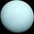

太阳系中行星的一些数据。（资料取自NASA行星数据 - 公制，图片取自NASA 照片库。）
|
名字 |
图片 |
质量(1024kg) |
直径(km) |
密度(kg/m3) |
重力(m/s2) |
天长(小时） |
与太阳距离（106km) |
平均温度(℃) |
卫星数量 |
备注 |
| 类地行星 |
水星 |
|
0.330 |
4879 |
5427 |
3.7 |
4222.6 |
57.9 |
167 |
0 |
太阳系八大行星中最小的一颗行星，也是离太阳最近的一颗行星 |
| 金星 |
|
4.87 |
12104 |
5243 |
8.9 |
2802.0 |
108.2 |
464 |
0 |
太阳系八大行星中最热的一颗行星，也是离太阳第二近的一颗行星 |
| 地球 |
|
5.97 |
12756 |
5514 |
9.8 |
24.0 |
149.6 |
15 |
1 |
太阳系八大行星中唯一有生命存在的行星 |
| 火星 |
|
0.642 |
6792 |
3933 |
3.7 |
24.7 |
227.9 |
-65 |
2 |
太阳系八大行星中唯一有两颗卫星的行星 |
| 类木行星 |
气巨星 |
木星 |
|
1898 |
142984 |
1326 |
23.1 |
9.9 |
778.6 |
-110 |
79 |
太阳系八大行星中最大的一颗行星，也是离太阳第五近的一颗行星 |
| 土星 |
|
568 |
120536 |
687 |
9.0 |
10.7 |
1433.5 |
-140 |
82 |
太阳系八大行星中最美丽的一颗行星，也是离太阳第六近的一颗行星 |
| 冰巨星 |
天王星 |
 |
86.8 |
51118 |
1271 |
8.7 |
17.2 |
2872.5 |
-195 |
27 |
太阳系八大行星中最冷的一颗行星，也是离太阳第七近的一颗行星 |
| 海王星 |
|
102 |
49528 |
1638 |
11.0 |
16.1 |
4495.1 |
-200 |
14 |
太阳系八大行星中最远的一颗行星，也是离太阳第八近的一颗行星 |
| 矮行星 |
冥王星 |
|
0.0146 |
2370 |
2095 |
0.7 |
153.3 |
5906.4 |
-225 |
5 |
2006年降格，但尚存争议 |